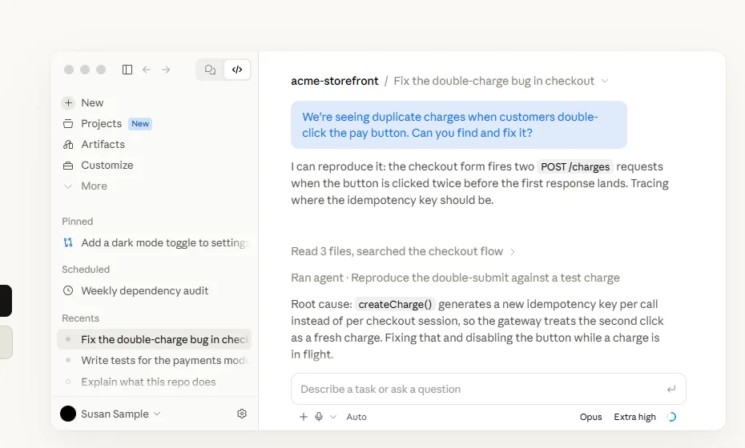
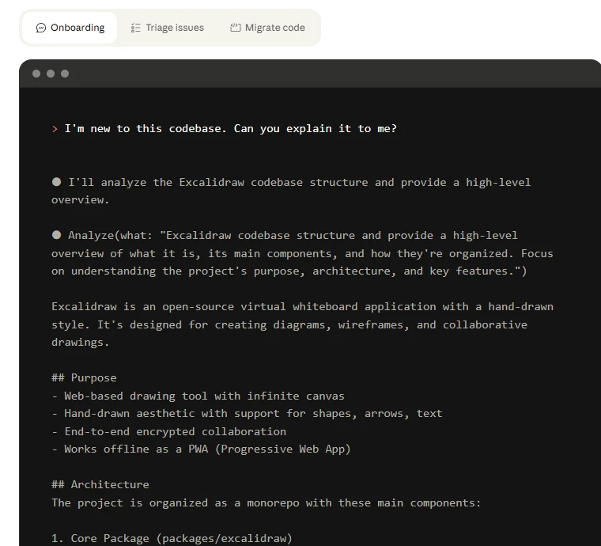
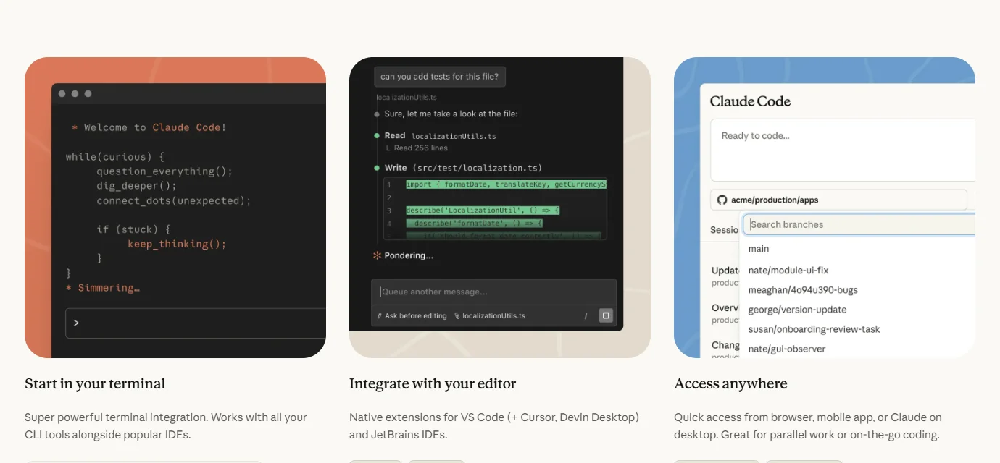

Claude CodeAnthropic
模型厂商亲自下场做的编程智能体：一个引擎跑遍终端、IDE、桌面、网页、手机和 Slack，一年内成为职业开发者使用最多的 AI 编程工具。
一页结论
- 职业开发者中使用最广：JetBrains 调研显示，工作中使用 Claude Code 的职业开发者从 2026 年 1 月的 18% 升到 5～7 月的 39%，美国达 47%S8
- 一个引擎、六个入口：CLI、桌面端、VS Code、JetBrains、网页云端、iOS / Android 共用同一个引擎，配置与记忆在本地各端共享；6 月起又通过 Claude Tag 进入 SlackS3S11
- 从个人工具变成企业平台：Anthropic 招股书显示，年消费 10 万美元以上的客户中，超过一半同时使用 API 和 Claude Code、Cowork 等自家应用，去年底这一比例约为 30%S15
- 迭代速度极快：近 90 天发布 81 个版本、近 30 天 24 个；8 月起默认启用自动审批模式，9 月推出 Projects，10 月代码审查正式面向团队和企业开放S5S1
- 争议集中在额度与成本：社区讨论最多的是 token 消耗与额度消耗过快，以及长期只支持自家模型S13
01公司介绍
| 项目 | 内容 |
|---|---|
| 公司 | Anthropic，公益公司（PBC）；10 月 26 日公开递交上市招股书S14 |
| 官网 | anthropic.com；Claude Code 产品页 claude.com/product/claude-codeS1 |
| 总部 | 美国旧金山S14 |
| 创立 | 2021 年，由 Dario Amodei（CEO）、Daniela Amodei（总裁）等前 OpenAI 员工创立S14 |
| 团队 | 约 5,300 人（2026 年 9 月，招股书）S14 |
| 融资 | 2026-02 G 轮 300 亿美元，投后估值 3,800 亿；2026-05 再融资约 650 亿美元，估值 9,650 亿（路透社报道）S14 |
| 收入 | 2026 年上半年收入 162.9 亿美元，上年同期 12 亿（招股书）S14S15 |
| Claude Code | 2025 年 2 月以研究预览发布，2025 年 5 月随 Claude 4 正式发布S14 |
02公司战略
Anthropic 的增长主要来自企业和编程，Claude Code 是把模型能力变成企业订阅的关键产品。
- 模型与产品一起迭代：Claude Code 只用 Claude 模型，新模型一发布即可在产品中使用；版本以每周数个的速度更新S5
- 用应用拉动平台消费：招股书显示，消费类收入（API 调用和应用的按量计费）占上半年收入的 80%；同时使用平台和自家应用的大客户比例一年内从约 30% 升到过半S15
- 从编程延伸到团队协作：Projects 把多个并行会话组织成一个长期项目；Claude Tag 让团队在 Slack 里直接派活S1S11
- 企业化：Team 与 Enterprise 计划包含 Claude Code，配套代码审查、集中管理的设置、消费上限和统一网关S2S5
03产品定位
| 项目 | 内容 |
|---|---|
| 一句话定位 | 读懂代码库、编辑文件、运行命令、接入开发工具的编程智能体，可在终端、IDE、桌面和浏览器中使用S3 |
| 目标用户 | 职业开发者与企业工程团队；产品页展示的客户包括 Stripe、Shopify、Databricks、Figma、Notion、Spotify 等S1 |
| 核心场景 | 熟悉陌生代码库、把 issue 变成 PR、跨文件重构与迁移、修 bug、代码审查S1 |
| 延伸场景 | Slack 里的团队任务（Claude Tag）、定时任务（每日代码审查、依赖审计、晨间简报）S11S3 |

04产品与主要功能
Claude Code 的特点是“一个引擎，多个入口”：不管从哪里用，底层都是同一个 Agent；能力集中在编程与自动化，办公类任务交给同订阅的 Claude Cowork。
产品架构
交互入口
CLI（功能最全）桌面端VS CodeJetBrains网页 claude.ai/codeiOS / AndroidSlack（Claude Tag）
协作与调度
子 AgentAgent 视图（后台派发）Agent 团队（实验）动态工作流（脚本编排多个子 Agent）Projects定时任务（云端 / 桌面）远程控制与手机派发
扩展层
CLAUDE.md / AGENTS.md 项目说明SkillsHooksMCP插件与插件市场Channels（向会话推送事件）
模型层
只用 Claude：Fable、Opus、Sonnet、Haiku可经 Amazon Bedrock、Google Agent Platform、Microsoft Foundry 调用S3
运行环境
本地电脑（权限模式 + 沙箱）Anthropic 托管的云端会话自托管运行器Chrome 浏览器与电脑操作
安全与管控自动 / 手动权限模式沙箱隔离集中下发的设置消费上限与统一网关零数据保留（企业）
核心功能


截图来自 Claude Code 官网产品页，2026-11-01。
12 项能力评估
文档与办公产出有限非主场景；办公任务由同订阅的 Claude Cowork 承担
| 功能 | 做什么 | 适用 |
|---|---|---|
| 子 Agent | 在独立上下文里完成支线任务，只把摘要交回主对话 | 所有计划S4 |
| 动态工作流 | Claude 写一个可复用的脚本，编排大量子 Agent 并交叉核验结果，用于代码审计、大规模迁移 | 所有计划S4 |
| Projects | 一个长期对话里启动多个并行会话（云端或本机） | 2026-09 发布S1S4 |
| Code Review | 多个 Agent 并行查找问题，验证后在 PR 中逐行评论 | Team / EnterpriseS1 |
| 定时任务 | 按计划、API 调用或 GitHub 事件在云端运行 | 所有付费计划S3 |
| Claude Tag | 在 Slack 频道里 @Claude 派活，每个线程是一个沙箱会话 | Team / EnterpriseS11 |
05商业模式
Claude Code 不单独收费，包含在 Claude 订阅里；企业版另按 API 价计量用量。
| 计划 | 价格 | Claude Code 用量 |
|---|---|---|
| Pro | $20/月（年付 $17/月） | 每 5 小时与每周的基础额度S2 |
| Max | $100/月 | Pro 的 5 倍；含每月 $100 API 额度S2 |
| Ultra | $200/月 | Pro 的 10 倍，认证账号无 5 小时限制；含每月 $200 API 额度S2 |
| Team 标准席 | $25/人/月（年付 $20） | 高于 Pro；2～150 席S2 |
| Team 高级席 | $125/人/月（年付 $100） | 标准席的 5 倍，每月最多 $500 共享 API 额度S2 |
| Enterprise | $20/人/月（年付）+ 按 API 价计量用量 | 20 席起S2 |
收费逻辑：个人用户按订阅档位换额度，企业用户按席位加用量。招股书显示，第三季度使用 Claude Code 的企业客户中，消费最高的 5% 每月花费约为不使用它的企业用户平均水平的 20 倍——编程是拉高客单价的主要场景S15。
06上下游与渠道
和 Cursor 相反，Claude Code 的上游模型是自己的，依赖主要在算力；渠道则多了云厂商这一层。
上游：算力
上游：模型
Anthropic 自研 Claude 系列，Claude Code 只用自家模型S3
Claude Code
CLI、桌面、IDE 插件、云端会话、Claude Tag
渠道
生态伙伴
下游客户
职业开发者与企业工程团队年消费 10 万美元以上客户超过 11,900 家（全公司口径）S15
07市场表现
| 指标 | 数据 | 口径 |
|---|---|---|
| 年化收入 | 超过 25 亿美元，年初以来翻倍 | 2026-02，Anthropic 融资公告S9S10 |
| 用户增长 | 周活跃用户年初以来翻倍（未公布绝对值） | 2026-02，同上S9 |
| 企业订阅 | 年初以来增长 3 倍 | 2026-02，同上S9 |
| VS Code 插件 | 累计安装 2,922 万次，评分 4.0（841 条） | VS Code 插件市场，调研日S12 |
| 大客户渗透 | 年消费 10 万美元以上的客户中超过一半同时使用平台和自家应用 | 2026-09-30，招股书S15 |
招股书只报告一个经营分部，没有单独披露 Claude Code 的收入S15。
08用户口碑
以下来自 Hacker News 近 90 天的高分讨论（C 级来源，只反映社区情绪，不作为事实依据）。
09安全合规
| 项目 | 内容 |
|---|---|
| 认证 | SOC 2 Type 2 报告、ISO 27001 证书等，可在 Anthropic 信任中心获取S6 |
| 权限模式 | 自动模式由独立分类模型审核每个操作并拦截高风险操作；手动模式下改文件、跑命令都要用户批准S6 |
| 沙箱 | Bash 命令可做文件系统与网络隔离S6 |
| 训练政策 | Free / Pro / Max / Ultra 用户开启设置后数据可用于训练；Team、Enterprise、API 等商业条款下默认不用于训练S7 |
| 数据保留 | 同意用于改进模型的用户保留 5 年；企业可申请零数据保留S7 |
| 近期事件 | 2026-10-29：有人在 Cursor 使用的第三方扩展市场上架了被篡改的 Claude Code 扩展，Anthropic 表示自身系统未被入侵S16S13 |
10近期动态
11潜在风险分析意见
| 风险 | 表现 | 可能程度 |
|---|---|---|
| 额度与成本 | 社区持续讨论 token 消耗与额度消耗过快，影响重度用户的满意度S13 | 中 |
| 单一模型绑定 | 只支持 Claude 模型，模型能力或供给出现波动时没有替代选项S3 | 中 |
| 政府市场 | 2026 年初与美国国防部发生争议，被认定为供应链风险，联邦机构一度停用S14 | 中 |
| 供应链安全 | 第三方扩展市场出现被篡改的扩展，用户可能误装S16 | 中 |
| 竞争加剧 | Codex、Cursor 等在价格与额度上竞争，部分用户在多个工具间切换S13 | 中 |
| 上市后的业绩压力 | 招股书显示上半年净亏损 807 亿美元（主要为可转换工具的账面损失），上市后增长与盈利会被持续检视S14 | 低 |
“可能程度”为基于现有公开信息的判断，不是量化预测。
12综合结论分析意见
优势
- 职业开发者使用率领先，美国近半数在用
- 模型与产品同一家公司，新模型发布即可用，迭代极快
- 入口最全：CLI、桌面、IDE、网页、手机、Slack 共用一个引擎
劣势
- 只支持自家模型
- 额度与成本是用户最常见的抱怨
机会
- 从编程延伸到团队协作（Claude Tag、Projects）
- 企业大客户同时采购平台和应用，客单价持续提高
威胁
- OpenAI Codex 等模型厂商产品正面竞争
- 政府市场的政策风险
- 开发工具供应链的安全事件
对 AI 产品团队的启示
- 模型厂商做应用，速度就是护城河：模型和产品在同一个团队里迭代，新能力当天就能进产品。应用层团队要找到模型厂商不愿意做或做不好的细分场景。
- 核心做成引擎，界面做成入口：同一个 Agent 跑在终端、IDE、桌面、手机和 Slack，用户在哪里就在哪里交付。做产品时先把能力抽象成可复用的引擎，再铺入口。
- 企业版才是收入主力：集中管理、消费上限、代码审查这些“管控类”功能决定了企业愿不愿意大规模采购。
- 拥抱开放标准能降低迁移门槛：MCP、Skills、兼容 AGENTS.md，让用户带着已有配置迁过来；反过来，迟迟不兼容会成为社区批评点。
信息缺口
以下信息未找到可靠的公开来源，本报告不做推测。
- Claude Code 单独的收入与付费用户数：招股书只报告一个经营分部，未单独披露
- 周活跃用户的绝对值：官方只说“年初以来翻倍”
- 2026 年 2 月之后 Claude Code 的年化收入
- 各入口（CLI、桌面、IDE、网页、Slack）的用户占比
来源
A 官方 · B 权威媒体或第三方 · C 社区（仅用于口碑与线索）。访问日期均为 2026-11-01。
- S1 · AClaude Code 产品页（含最新功能公告与客户展示）Anthropic
- S2 · AClaude 定价Anthropic
- S3 · APlatforms and integrationsClaude Code 文档
- S4 · ARun agents in parallelClaude Code 文档
- S5 · AClaude Code changelogClaude Code 文档 · 截至 2026-10-31
- S6 · ASecurityClaude Code 文档
- S7 · AData usageClaude Code 文档
- S8 · BAI Coding Agents: Adoption TrendsJetBrains Research · 2026-08
- S9 · BAnthropic 融资公告解读（Claude Code 年化收入超 25 亿美元）Simon Willison · 2026-02-12
- S10 · BThe Surprise Hit That Made Anthropic Into an AI JuggernautBloomberg · 2026-02-20
- S11 · BAnthropic debuts Claude Tag, a capable AI teammate that lives within SlackSiliconANGLE · 2026-06-23
- S12 · AClaude Code for VS CodeVS Code 插件市场
- S13 · CHacker News 讨论：AGENTS.md / 后台 Agent 摘要 / 代码审查实践 / 扩展后门Hacker News · 2026-09 至 2026-10
- S14 · BAnthropic（汇总招股书、路透社、彭博等报道）Wikipedia
- S15 · BAnthropic's IPO filing reveals its strategy for keeping enterprise customers hookedTechCrunch · 2026-10-26
- S16 · ASecurity notice: malicious version of Anthropic.claude-code identified in the Cursor VS Code Extension MarketplaceCursor 博客 · 2026-10-29